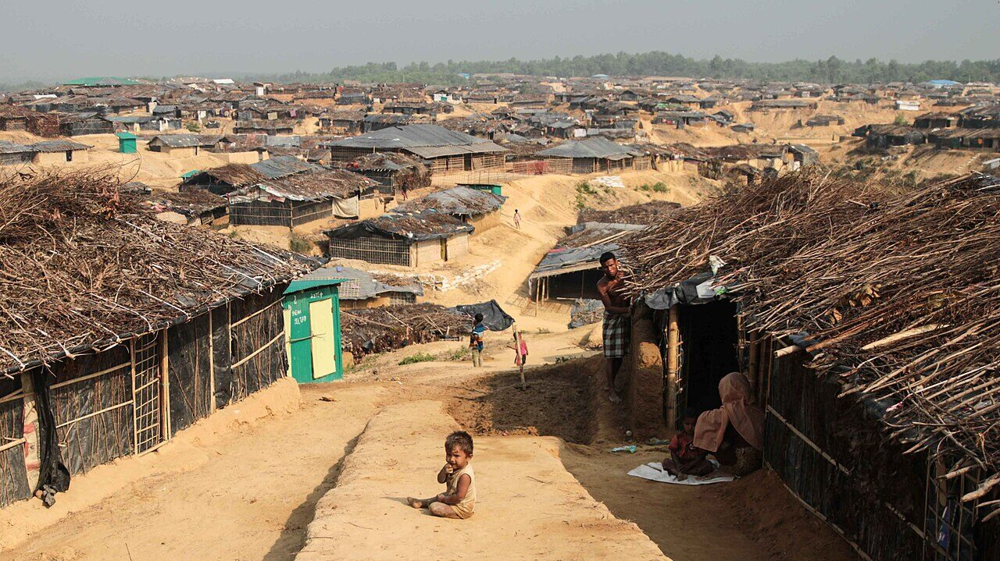

Photo: John Owens / VOA, public domain, via Wikimedia Commons
World Desk Asia-Pacific
World Court Rules Myanmar Committed Genocide Against the Rohingya, a First for the ICJ
In a 9-6 decision, the International Court of Justice found Myanmar responsible for genocide in northern Rakhine State and ordered reparations. Making Myanmar comply is the next fight.